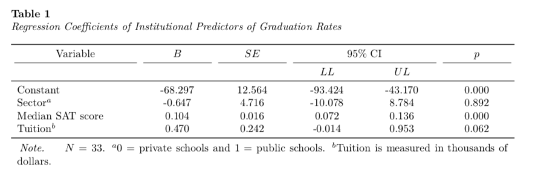
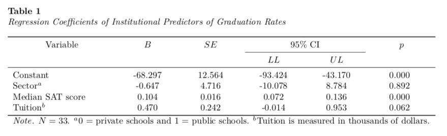
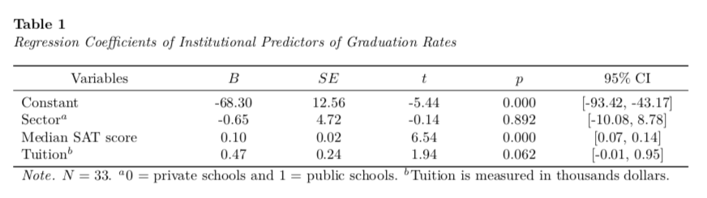

---
title: "Untitled"
author: "Andrew Zieffler"
date: "1/12/2020"
output: pdf_document
header-includes:
- \usepackage{caption}
- \captionsetup[table]{textfont={it}, labelfont={bf}, singlelinecheck=false, labelsep=newline}
---./assets/body-header.qmd
This is the fourth part of a short blog series I am writing to re-create some of the sample tables found in the 7th edition APA Publication Manual. In this post I will attempt to mimic Table 7.17 (p. 220). To do so, I will incorporate many ideas that I covered in the first, second, and third of these posts.
Rather than re-create this table using the data from Table 7.17, I will illustrate mimicing this table with summary information gleaned from a different dataset.
My Process
I will again render to PDF and set up the YAML to import the caption package (LaTeX) and set up the APA caption formatting.
In the RMarkdown body, I will load a few packages and also import a data set that I will use to create the summary values akin to those in Table 7.10.
# Load libraries
library(broom)
library(knitr)
library(kableExtra)
library(tidyverse)
# Import data
mn = read_csv("https://raw.githubusercontent.com/zief0002/rustic-penguin/main/data/mn-schools.csv") |>
mutate(public = if_else(sector == "Public", 1, 0))
# View data
head(mn)# A tibble: 6 × 6
name grad sector sat tuition public
<chr> <dbl> <chr> <dbl> <dbl> <dbl>
1 Augsburg College 65.2 Private 1030 39.3 0
2 Bethany Lutheran College 52.6 Private 1065 30.5 0
3 Bethel University, Saint Paul, MN 73.3 Private 1145 39.4 0
4 Carleton College 92.6 Private 1400 54.3 0
5 College of Saint Benedict 81.1 Private 1185 43.2 0
6 Concordia College at Moorhead 69.4 Private 1145 36.6 0The data in were collected from http://www.collegeresults.org and contain 2011 institutional data for n=33 Minnesota colleges and universities. The codebook is available here.
We need to compute the regression results from fitting an OLS model. Here I will predict variation in graduation rates using the other variables in the dataset. I will also use the tidy() output from the broom package to obtain the coefficient-level output that is summarized in the table.
# Fit model
lm.1 = lm(grad ~ 1 + public + sat + tuition, data = mn)
# Obtain coefficient-level summaries
tab_01 = tidy(lm.1)
# View table
tab_01# A tibble: 4 × 5
term estimate std.error statistic p.value
<chr> <dbl> <dbl> <dbl> <dbl>
1 (Intercept) -68.3 12.6 -5.44 0.00000755
2 public -0.647 4.72 -0.137 0.892
3 sat 0.104 0.0159 6.54 0.000000364
4 tuition 0.470 0.242 1.94 0.0617 We also need to obtain the limits of the confidence intervals. We can simply take the estimate and add/subtract two standard errors to get these limits.
# Compute confidence limits
tab_01 = tab_01 %>%
mutate(
LL = estimate - 2*std.error,
UL = estimate + 2*std.error
)
# View table
tab_01# A tibble: 4 × 7
term estimate std.error statistic p.value LL UL
<chr> <dbl> <dbl> <dbl> <dbl> <dbl> <dbl>
1 (Intercept) -68.3 12.6 -5.44 0.00000755 -93.4 -43.2
2 public -0.647 4.72 -0.137 0.892 -10.1 8.78
3 sat 0.104 0.0159 6.54 0.000000364 0.0721 0.136
4 tuition 0.470 0.242 1.94 0.0617 -0.0135 0.953Now we just arrange the columns in the order we want to create the table and also re-name the elements in the term column to correspond to the text we want in the table.
# Select columns
tab_01 = tab_01 %>%
select(
term, estimate, std.error, LL, UL, p.value
) %>%
mutate(
term = c("Constant", "Sector$^a$", "Median SAT score", "Tuition$^b$")
)
# View table
tab_01# A tibble: 4 × 6
term estimate std.error LL UL p.value
<chr> <dbl> <dbl> <dbl> <dbl> <dbl>
1 Constant -68.3 12.6 -93.4 -43.2 0.00000755
2 Sector$^a$ -0.647 4.72 -10.1 8.78 0.892
3 Median SAT score 0.104 0.0159 0.0721 0.136 0.000000364
4 Tuition$^b$ 0.470 0.242 -0.0135 0.953 0.0617 I will then pipe this into the kable() function to set the column names, column alignment, and table caption. The digits= argument is included to round the values in each column. (Since the first column is text we set this to NA.)
I also employ similar kableExtra function from those introduced in Part 1, Part 2, and Part 3 to make the table the full page width, include the footnote, center the header names, and increase the width of the first column, and add the top header row.
kable(
tab_01,
format = "latex",
booktabs = TRUE,
escape = FALSE,
col.names = c("", "", "", "$LL$", "$UL$", ""),
align = c("l", "c", "c", "c", "c", "c"),
digits = c(NA, 3, 3, 3, 3, 3),
caption = "Regression Coefficients of Institutional Predictors of Graduation Rates"
) %>%
kable_styling(full_width = TRUE) %>%
footnote(
general_title = "Note.",
general = "$N=33$. $^a$0 = private schools and 1 = public schools. $^b$Tuition is measured in thousands of dollars.",
footnote_as_chunk = TRUE,
escape = FALSE
) %>%
row_spec(row = 0, align = "c") %>%
column_spec(column = 1, width = "1.5in") %>%
add_header_above(
c("Variable" = 1, "$B$" = 1, "$SE$" = 1, "95\\\\% CI" = 2, "$p$" = 1),
escape = FALSE
)
We need to remove the extraneous mid-rules by altering the LaTeX syntax as we did in Part 2.
\begin{table}
\caption{\label{tab:}Regression Coefficients of Institutional Predictors of Graduation Rates}
\centering
\begin{tabu} to \linewidth {>{\raggedright\arraybackslash}p{1.5in}>{\centering}X>{\centering}X>{\centering}X>{\centering}X>{\centering}X}
\toprule
\multicolumn{1}{c}{Variable} & \multicolumn{1}{c}{$B$} & \multicolumn{1}{c}{$SE$} & \multicolumn{2}{c}{95\% CI} & \multicolumn{1}{c}{$p$} \\
\cmidrule(l{3pt}r{3pt}){4-5}
\multicolumn{1}{c}{} & \multicolumn{1}{c}{} & \multicolumn{1}{c}{} & \multicolumn{1}{c}{$LL$} & \multicolumn{1}{c}{$UL$} & \multicolumn{1}{c}{}\\
\midrule
Constant & -68.297 & 12.564 & -93.424 & -43.170 & 0.000\\
Sector$^a$ & -0.647 & 4.716 & -10.078 & 8.784 & 0.892\\
Median SAT score & 0.104 & 0.016 & 0.072 & 0.136 & 0.000\\
Tuition$^b$ & 0.470 & 0.242 & -0.014 & 0.953 & 0.062\\
\bottomrule
\multicolumn{6}{l}{\textit{Note.} $N=33$. $^a$0 = private schools and 1 = public schools. $^b$Tuition is measured in thousands of dollars.}\\
\end{tabu}
\end{table}
Alternative Table
An alternative table puts the confidence intevral in a single column by putting the confidence limits in square brackets. This is akin to Table 7.16 (p. 219) in the 7th edition of the APA Publication Manual.
To create this I will again use the tidy() function and create the confidence limits. I will then create a new column in the tidy output that concatenates the confidence limits and places them inside square brackets. Lastly I will select the columns I want for the table and set the text for the “Variables” column.
# Get coefficient-level output
# Create confidence limits
tab_01 = tidy(lm.1) %>%
mutate(
LL = estimate - 2*std.error,
UL = estimate + 2*std.error
)
# Put confidence limits inside square brackets
tab_01$CI = paste0("[", round(tab_01$LL, 2), ", ", round(tab_01$UL, 2), "]")
# Get output for table
tab_01 = tab_01 %>%
select(
term, estimate, std.error, statistic, p.value, CI
) %>%
mutate(
term = c("Constant", "Sector$^a$", "Median SAT score", "Tuition$^b$")
)
tab_01# A tibble: 4 × 6
term estimate std.error statistic p.value CI
<chr> <dbl> <dbl> <dbl> <dbl> <chr>
1 Constant -68.3 12.6 -5.44 0.00000755 [-93.42, -43.17]
2 Sector$^a$ -0.647 4.72 -0.137 0.892 [-10.08, 8.78]
3 Median SAT score 0.104 0.0159 6.54 0.000000364 [0.07, 0.14]
4 Tuition$^b$ 0.470 0.242 1.94 0.0617 [-0.01, 0.95] Finally, I will use kable() and the kableExtra functionality to create the table.
kable(
tab_01,
format = "latex",
booktabs = TRUE,
escape = FALSE,
col.names = c("Variables", "$B$", "$SE$", "$t$", "$p$", "95\\% CI"),
align = c("l", "c", "c", "c", "c", "c"),
digits = c(NA, 2, 2, 2, 3, NA),
caption = "Regression Coefficients of Institutional Predictors of Graduation Rates"
) %>%
kable_styling(full_width = TRUE) %>%
footnote(
general_title = "Note.",
general = "$N=33$. $^a$0 = private schools and 1 = public schools. $^b$Tuition is measured in thousands dollars.",
footnote_as_chunk = TRUE,
escape = FALSE
) %>%
row_spec(row = 0, align = "c") %>%
column_spec(column = 1, width = "1.5in") %>%
column_spec(column = 6, width = "1in")